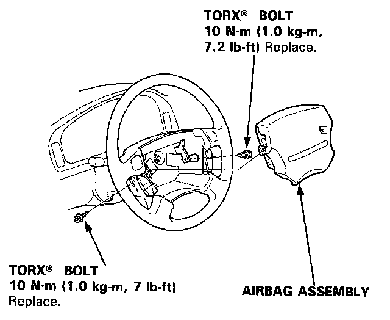
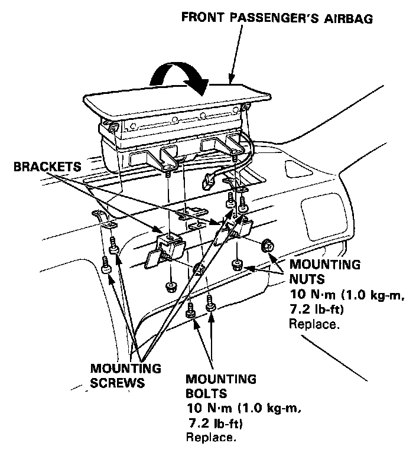
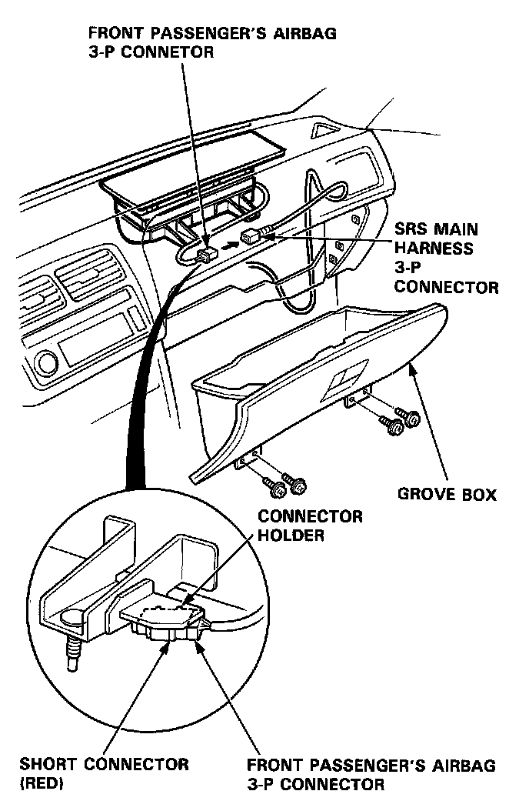
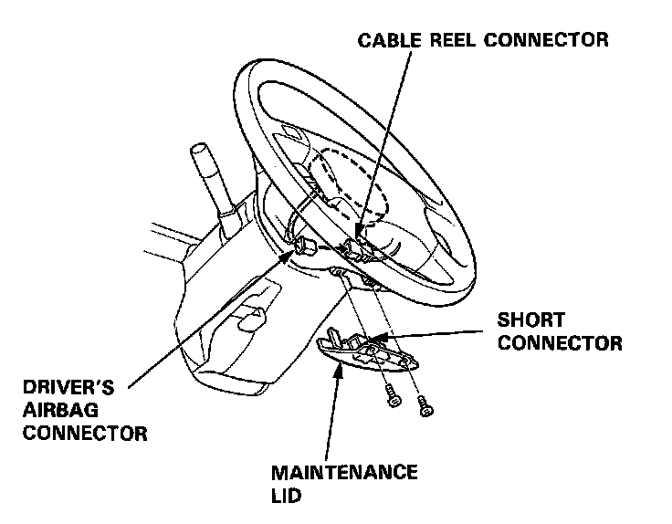
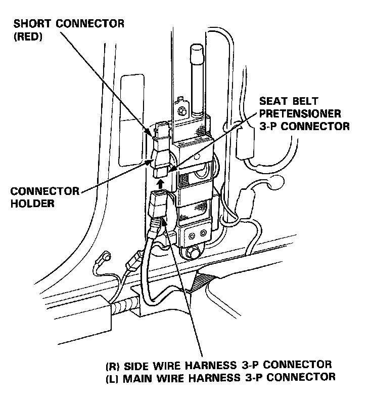

Airbag Assembly Installation
Airbag Assembly Installation
CAUTION:
- Be sure to install the SRS wiring so that it is not pinched or interfering with other car parts.
- Be sure the battery cables are disconnected.
- After completing repair work, be sure to remove the SRS short connectors and reconnect all the connectors.
Driver's Airbag:
1. Place the driver's airbag assembly in the steering wheel, and secure it with new TORX� bolts.

Front Passenger's Airbag:
2. Install the front passenger's airbag assembly in the reverse order of removal.

3. Remove the short connectors from the front passenger's airbag connector and from the SRS main harness connector.

4. Reconnect the front passenger's airbag connector to the SRS main harness connector.
5. Reinstall the glove box.
6. Remove the short connectors from the driver's airbag connector and from the cable reel 3-P connector.
7. Reconnect the driver's airbag connector to the cable reel connector. Attach the short connector to the lid, then reinstall the lid on the steering wheel.

8. Remove the short connectors from the seat belt pretensioners, then attach them to their holders.

9. Reconnect the side wire harness 3-P connector to the right pretensioner and the main wire harness 3-P connector to the left pretensioner.
10. Reinstall the quarter trim panel.
11. Reconnect the battery positive cable, then the negative cable.
12. After installing the airbag assembly, confirm proper system operation:
- Turn the ignition to II: the instrument panel SRS indicator light should go on for about 6 seconds and then go off.
- Confirm operation of horn buttons.
- Confirm operation of cruise control set/resume switch.
- Enter the customer's code number to restore radio operation.